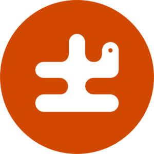

Precis! Böckerna är sorterade i bokstavsordning efter författarens efternamn.
Nu kanske du kan läsa på ett annat språk än svenska. Alla sådana böcker är
märkta med en prick i samma färg. Vilken färg har pricken?
Bibliotekets hemsida
Tillbaka till startsidan
Till svarsdelen
Svarsdelen på startsidan
Wikipedia om demokrati
